우아콘 2026 세션 여섯 개, 그리고 우리가 배울 것
| # | 세션 | 한 줄 |
|---|---|---|
| 1 | ClayDesign 개발기 | 한 줄 요청이 디자인시스템 화면이 된다 |
| 2 | 의도와 코드는 언제부터 어긋났을까 | 기준은 코드에, 판단은 시스템이 |
| 3 | 헤드리스 어드민 | 어드민에 AI를 넣지 않고, AI에 어드민을 넣었다 |
| 4 | 시니어 디자이너 × 주니어 개발자 | 기준을 숫자로 만들자 품질이 올라갔다 |
| 5 | 개발이 편해지는 데는 이유가 있다 | 기다림을 없애고, AI가 앱 안을 보게 했다 |
| 6 | AI로 딴짓하는 디자인팀, 할짓하는 TF | 딴짓으로 쌓은 실력이 실전이 됐다 |
CoffeeFillIcon을 지어내자 검증이 막고, 틀린 곳을 문장으로 알려 AI가 고침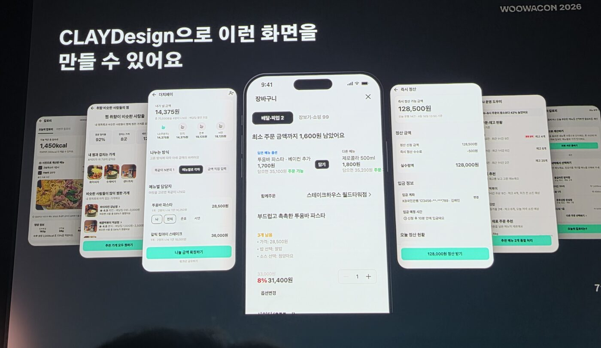
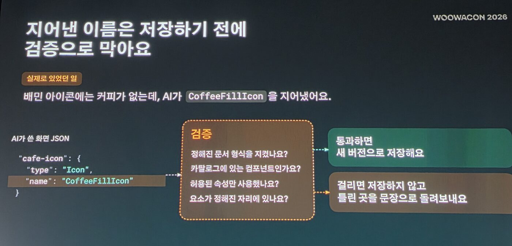
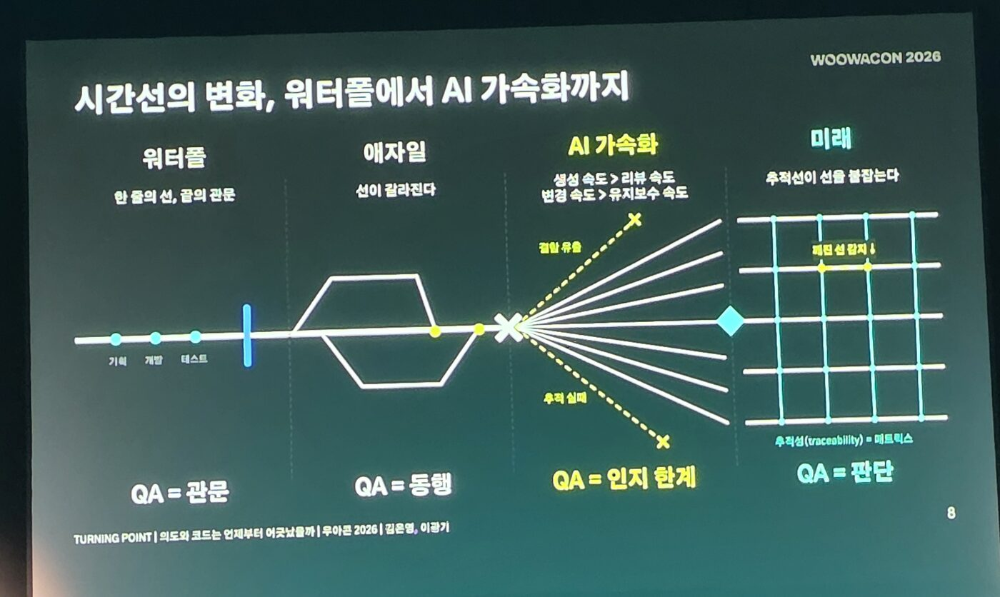
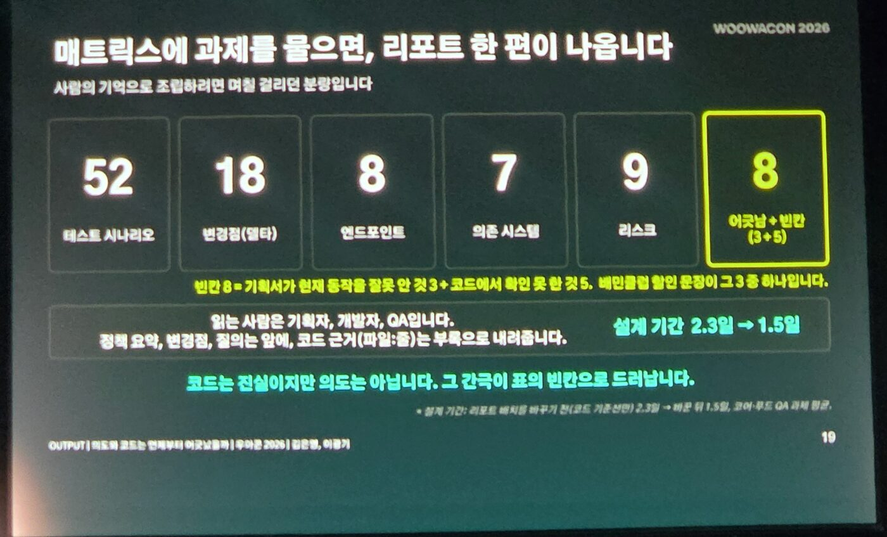
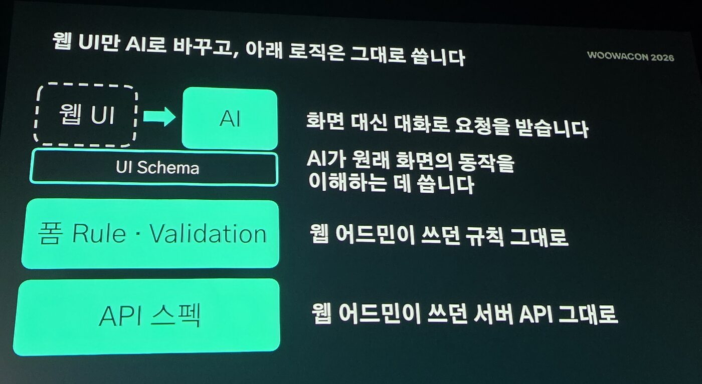
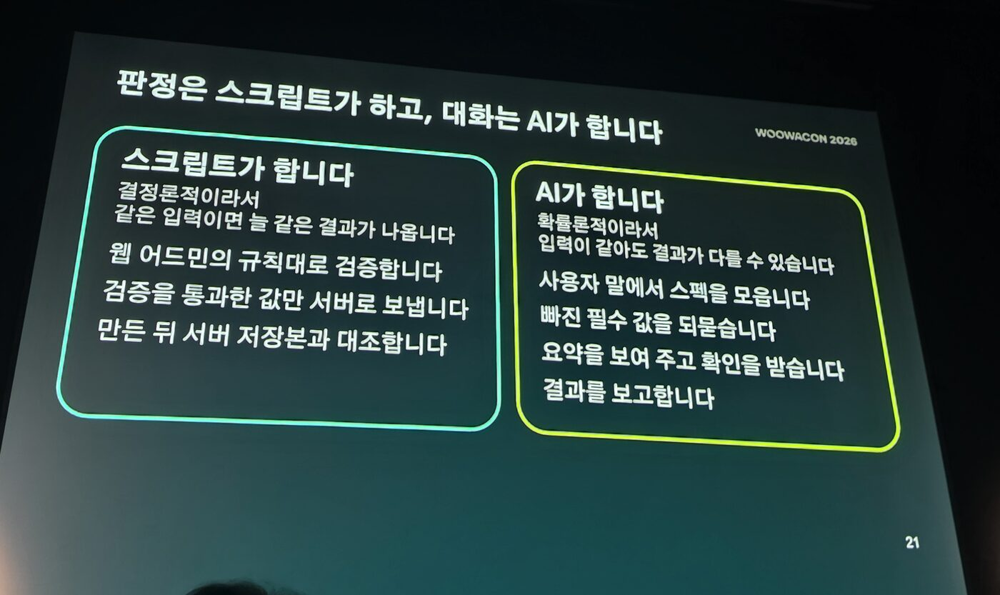
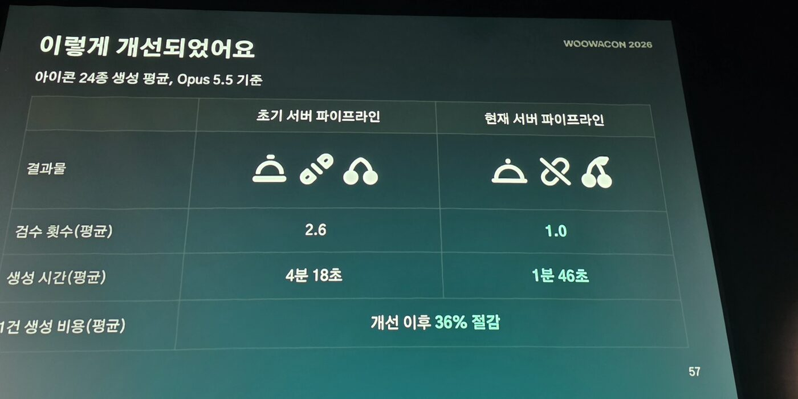
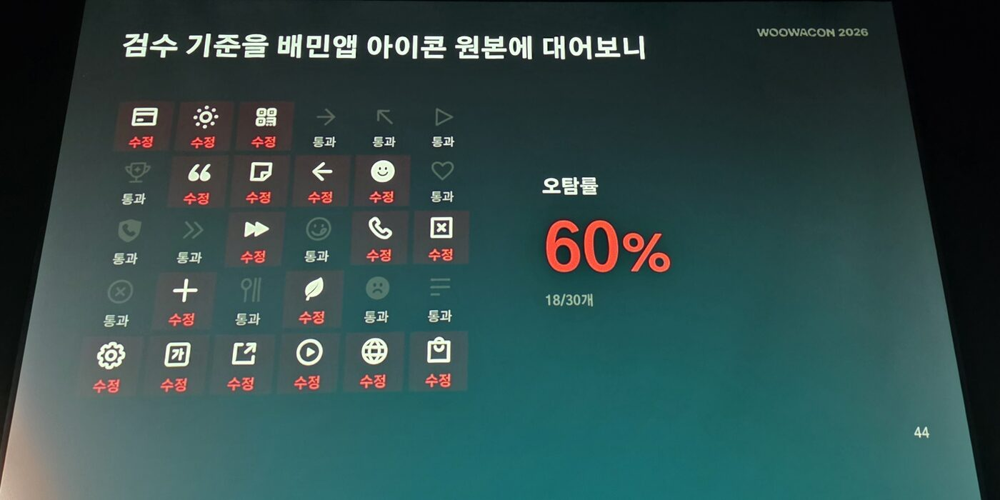
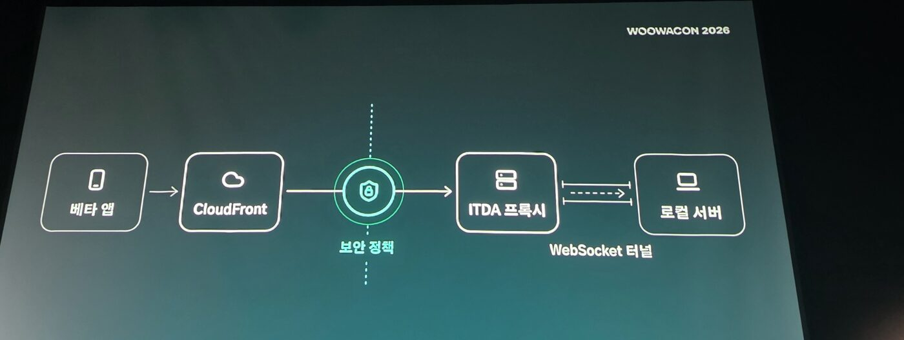
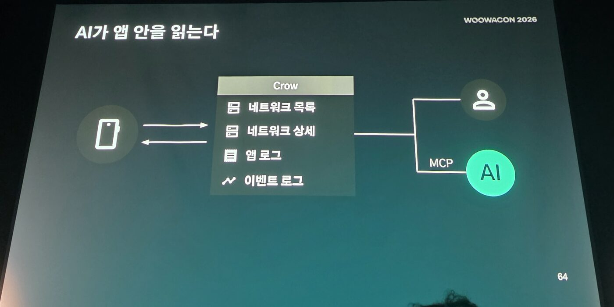
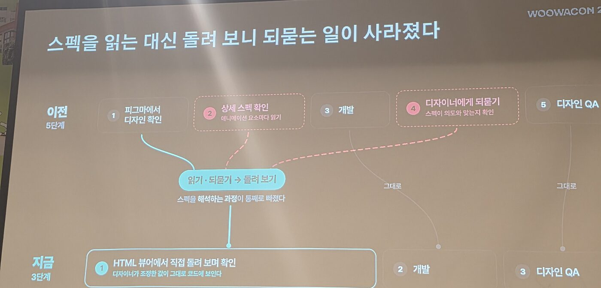
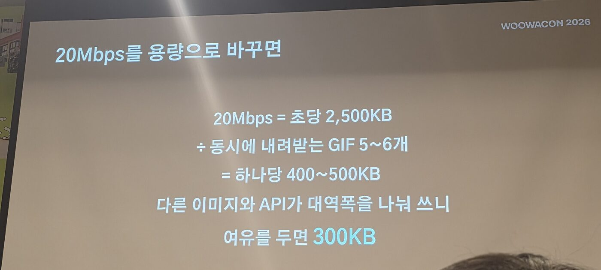
| 세션 | 배민은 | 우리는 |
|---|---|---|
| ClayDesign | AI가 카탈로그 이름으로만 화면을 그림, 저장 전 검증 | 고를 수 있는 목록을 주고, 검증 통과만 반영 |
| QA | 코드에서 스펙을 쌓고, 반려 사유를 규칙으로 | 반복 지적은 규칙 파일로, 현재 동작은 코드에 묻기 |
| 헤드리스 어드민 | 화면만 AI로, 판정은 스크립트 | 개편 대신 대화형 스킬로 감싸 보기 |
| 디자이너×개발자 | 기준을 숫자로, 잴 수 있는 것만 AI가 | AI 평가는 정답 샘플에 먼저 대 보기 |
| ITDA·CROW | 기다림을 없애고, AI에게 앱 안을 보여 줌 | AI가 못 보는 것과 우리의 기다림 찾기 |
| AI 디자인팀 | 매일 작게 만들고, 기준은 숫자로 | 작게 자주 만들고, 감각을 말로 옮기기 |
raw/session/ 폴더에 있습니다Q&A